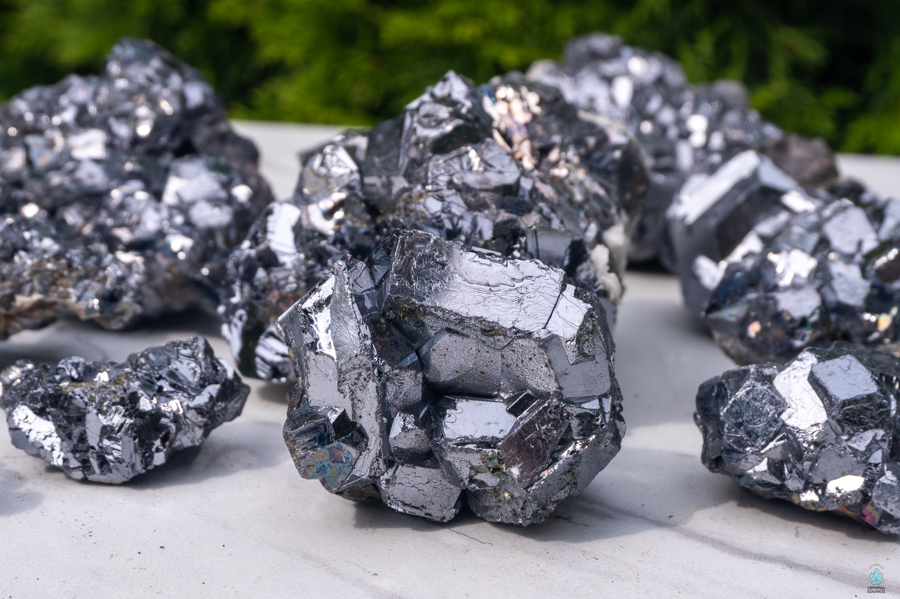
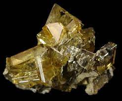

New here?

New to rockhounding and don't know where to start? Not to worry, we will show you the ropes. Click below to head over to our "Getting Started" guide
Getting StartedRocks & Minerals In Kansas


Kansas has some amazing rockhounding to offer, with a rich geological history that makes it a prime destination for enthusiasts. From the famous fossil beds of the Cretaceous period to the wide variety of minerals and rocks scattered throughout the state, there is no shortage of treasures to be discovered. Be sure to visit locations like the Smoky Hill River region for marine fossils or the Tri-State Mining District for intriguing minerals. Happy rockhounding!
Sponsored Dig Site

Own a digsite you would like to advertize in Kansas? Contact us for more information about being our sponsor of the month! Email sponsors@rockhounding.org for more information.
Dig With UsPopular Rocks In Kansas
-
 Crinoid Fossils
Crinoid FossilsDiscover remnants of ancient sea creatures called crinoids that once inhabited the vast oceans that covered Kansas millions of years ago.
Read More -

Galena
Galena, a fascinating metallic mineral and the primary ore of lead, can be found in Kansas, often displaying cubic crystal structures.
Read More -
 Shark Teeth
Shark TeethUnearth ancient shark teeth from the prehistoric seas that once covered Kansas, providing a glimpse into the marine life that existed millions of years ago.
Read More -
 Smoky Quartz
Smoky QuartzSmoky Quartz, a stunning variety of quartz crystal with a unique brownish-gray hue, can be found in Kansas and is highly sought after by collectors.
Read More -
 Sphalerite
SphaleriteSearch for Sphalerite, a mineral composed of zinc and iron, which often exhibits a captivating reddish-brown to black coloration and has been found in Kansas.
Read More -
 Ammonite Fossils
Ammonite FossilsAmmonite fossils, the remains of extinct marine mollusks, are prized by collectors and can be found in the sedimentary rock layers of Kansas.
Read More -
 Calcite
CalciteCalcite, a common and versatile mineral, can be found in a variety of colors and crystal forms in Kansas, making it a favorite among rockhounds.
Read More -

Barite
Barite, a heavy and brittle mineral, can be found in Kansas in various colors and is known for its unique tabular crystal formations.
Read More -
 Trilobite Fossils
Trilobite FossilsTrilobite fossils, the remains of ancient arthropods, can be found in Kansas, offering a glimpse into the diverse life that thrived during the Paleozoic Era.
Read More -
 Pyrite
PyritePyrite, also known as "Fool's Gold," is a metallic mineral that can be found in Kansas, often displaying a shiny, gold-like appearance and cubic crystal structures.
Read More
Popular Areas In Kansas
-
 Tri-State Mining District
Tri-State Mining DistrictThe Tri-State Mining District, which spans across Kansas, Missouri, and Oklahoma, is a famous location for finding lead, zinc, and other minerals.
Read More -
 Keystone Gallery
Keystone GalleryLocated near the Monument Rocks, Keystone Gallery offers guided fossil hunting tours where visitors can search for ancient marine fossils, including ammonites and sharks' teeth.
Read More -
 Smoky Hill River
Smoky Hill RiverThe Smoky Hill River in central Kansas is an excellent location to search for agates, jasper, and petrified wood along the riverbanks.
Read More -
 Galena Mining Area
Galena Mining AreaGalena, a historic mining town in southeastern Kansas, is an excellent place to explore abandoned mines and hunt for minerals, such as sphalerite and galena.
Read More -
 Sternberg Museum of Natural History
Sternberg Museum of Natural HistoryVisit the Sternberg Museum of Natural History in Hays to learn about Kansas's geological history, view impressive fossil collections, and join fossil hunting field trips.
Read More -
 Wilson Lake
Wilson LakeWilson Lake in north-central Kansas is a great spot for finding colorful jasper and other interesting rocks along the shoreline.
Read More
Geology of Kansas
The geology of Kansas has a long and complex history that spans over a billion years. The oldest rocks in Kansas, dating back to the Precambrian era, can be found in the northeastern part of the state. These ancient rocks provide evidence of the tectonic activity that shaped the early Earth's crust.
During the Paleozoic era, shallow seas covered Kansas, leading to the deposition of marine sediments. The state's abundant limestone, shale, and sandstone layers were formed during this time. The most significant fossil discoveries in Kansas come from the Cretaceous period when the Western Interior Seaway divided North America, leaving behind rich marine deposits and numerous fossils of ancient marine life.
Throughout the Mesozoic and Cenozoic eras, Kansas experienced periodic inland seas, which contributed to the formation of its vast underground resources such as oil, natural gas, and coal. Erosion and deposition from these ancient seas also created the unique landscape of the state, including the iconic Flint Hills and the High Plains.
During the Pleistocene epoch, glaciation played a significant role in shaping Kansas's landscape. Glacial deposits left behind rich soil, while the retreat of glaciers formed the state's many rivers and lakes. The geology of Kansas provides rockhounds with a wide range of fossils, minerals, and rocks to discover, showcasing the state's diverse geological history.